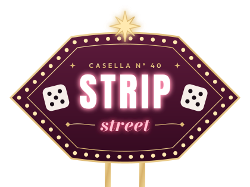
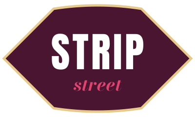
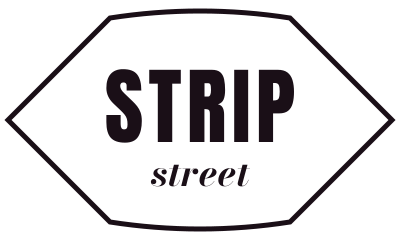

Strip Street è un gioco da tavolo per coppie. Il marchio è l'insegna della casella 40, disegnata come una pedina del tabellone: colori pieni, contorno d'inchiostro, ombra piena. Questo manuale dice come usare logo, colori, caratteri e movimento nell'app, nelle stampe e in tutto quello che ci gira intorno.

Si usa sempre la versione più ricca che lo spazio permette. L'insegna completa va su schermata iniziale, fine partita e materiali promozionali. Sotto i 200 px di larghezza si passa alla semplificata, nelle barre e sul tabellone al logotipo orizzontale, sotto i 48 px al simbolo.
Cornice di lampadine, stella, dadi, palo. Animata all'apertura dell'app.

Solo rombo e scritta. Per stampa, adesivi, dimensioni piccole.
Stella e scritta su una riga. Per il centro del tabellone, le barre e le intestazioni.
Rombo con la S e la stella sulla cornice. Per favicon, icona app, timbri.
Il contorno d'inchiostro fa reggere il marchio sia sulla carta crema sia sul velluto del tavolo: la stessa versione a colori va bene su entrambi. Il monocromo serve per stampa a un colore, incisioni e timbri.


Attorno al logo resta libero uno spazio pari ad almeno l'altezza della S di STRIP (x nello schema), ombra compresa. Niente testo, bordi o immagini dentro quest'area.
Il marchio non si deforma, non si ricolora fuori palette, non perde il contorno e non torna al neon: bagliori e sfumature appartengono al vecchio marchio.
Proporzioni indicative di una schermata: tavolo di velluto, carte di carta crema, inchiostro per contorni e testo, rosa e oro solo per accenti. Rosa e acqua identificano i due giocatori e non si scambiano mai.
#1A0F17#FFF8EC#F3E8D4#4A1530#C8285A#E0446E#3FB8AF#F5C842#CDE9D4I colori classici del gioco, pieni e saturi, sempre separati dal resto da un contorno d'inchiostro. Si usano solo per caselle e carte proprietà, mai per l'interfaccia.
Entrambe gratuite su Google Fonts. Lilita One è tonda e grassa come le scritte di una scatola da gioco; Inter fa leggere tutto il resto. Nel logo le lettere sono convertite in tracciati, quindi il marchio non dipende dal font installato.
Tocca a te!
Lilita One 400Titoli, nomi delle caselle e delle carte, numeri del timer e dei soldi, logo.
Guardatevi negli occhi per 30 secondi.
Inter 400 / 500 / 600 / 700Testi delle sfide, bottoni, cronaca, regole.
Display XL · 64Bancarotta
Display L · 40Prigione
Display M · 26Sussurro Audace
Titolo · 18Esegue: Giulia · durata ×2
Testo · 16Dì qualcosa di ammiccante all'orecchio del partner.
Etichetta · 12Affitto 80 €
Ogni elemento sembra un pezzo stampato e ritagliato: contorno d'inchiostro di 2 px, ombra piena spostata in basso a destra, niente sfocature. Le icone sono "adesivi": il tratto d'inchiostro sopra una sagoma colorata spostata di lato. I bottoni si schiacciano quando li premi.
Ombra 3 px; al clic scende di 3 px e l'ombra sparisce.
Fascia colore in alto, titolo Lilita, prezzo Inter.
Icone Lucide ripassate due volte; pedine rosa e acqua.
Il simbolo funziona da solo da 16 px in su. Per l'icona dell'app si mette su una piastra oro con gli angoli arrotondati: così si distingue in mezzo alle altre icone del telefono.
Tutto si muove come un oggetto fisico sul tavolo: arriva con un piccolo rimbalzo (curva "pop") e non dissolve mai lentamente. Con "riduci movimento" attivo nel sistema le animazioni si spengono.
1200 ms · ease-out morbidoRotola e si ferma inclinato.
900 ms · popSi gira dal mazzo; il titolo compare dopo il giro.
450 ms a casella · popSalta casella per casella, non scivola.
100 ms · si schiacciaScende sull'ombra quando lo premi.
1200 ms · ease-inVola via dal contatore del giocatore.
450 ms · timbroLe scritte arrivano come un timbro. Solo all'avvio e a fine partita.
Strip Street parla come un amico malizioso: dà del tu, scherza, invita. Non descrive in modo esplicito e non giudica. Le regole restano chiare anche quando il tono è giocoso.
"Sei finito in prigione. Niente sguardi, niente mani: oppure paghi 50 €."
"ERRORE: il giocatore non può toccare il partner durante lo stato prigione."
"Colore completo! Affitto e durata raddoppiano."
"Wow!!! 🔥🔥 Hai fatto il botto!!!"
:root {
/* marchio e tavolo */
--ink: #1A0F17; --paper: #FFF8EC; --paper-2: #F3E8D4;
--velvet: #4A1530; --felt: #CDE9D4;
--rose: #E0446E; --rose-deep: #C8285A;
--teal: #3FB8AF; --gold: #F5C842;
/* proprietà */
--marrone: #955436; --azzurro: #AAE0FA; --rosa: #D93A96; --arancione: #F7941D;
--rosso: #ED1B24; --giallo: #FEF200; --verde: #1FB25A; --blu: #0072BB; --stanza: #B48EE0;
/* pezzi del gioco */
--stroke: 2px solid var(--ink);
--hard: 4px 4px 0 var(--ink); --hard-sm: 2px 2px 0 var(--ink);
--radius: 12px;
/* caratteri */
--display: 'Lilita One', 'Arial Rounded MT Bold', system-ui, sans-serif;
--font: 'Inter', system-ui, sans-serif;
/* movimento */
--pop: cubic-bezier(.3, 1.5, .5, 1);
}